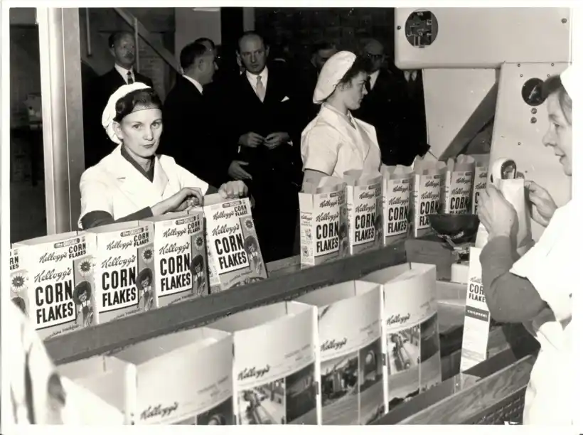

As a multinational food production company, we make a wide variety of foods from breakfast cereals, snacks, and satisfying meals. We also share our recipes to satisfy our customers because we believe the best world to live in is one filled with delicious and tasty recipes. Our commitment to quality and innovation drives us to continuously create new and exciting dishes that bring joy to dining tables around the globe. From comforting classics to bold new flavors, our recipes are crafted with care to ensure every bite is a moment of delight. Join us on a culinary journey where every recipe tells a story of passion, creativity, and the pursuit of culinary excellence.
History of VKellogg's:

VKellogg’s was founded by a renowned chef named Will Keith Kellogg in 1906, Battle Creek, Michigan, United States. Will Keith Kellogg, also known as Kellogg, has been known for his culinary feat, especially in the fields of breakfast and snacks, since 1903. Before he founded this company, he was working as a chef at the world’s renowned 5 michelin star restaurant, Sultan Restaurant. He quited his job and founded VKellogg’s to further express his culinary expertise.
In 1908, VKellogg’s has attracted over three thousand orders across Michigan itself. At the same year, VKellogg’s opened its first production branch in New York City and four others in Miami, Boston, Los Angeles, and Seattle in 1911-1916. VKellogg’s has been heavily impacted by The Great Depression and almost declared bankruptcy in 1935. But VKellogg’s always strived for food flavor and made customers’ day with our service.
As a result, VKellogg’s has become multinational company by opening its first international production branch in Toronto, Canada in 1950, Manchester, United Kingdom in 1954, and 20 more in Europe and Asia from 1956 to 1968. Now, VKellogg’s has more than 120 branches across the globe.
Mission:
To choose the healthiest and sustainable ingredients to be used in our food.
To create innovative and creative food design.
To present the correct information about our food and how we process it.
To hear the complaints received from the community and solve them all.